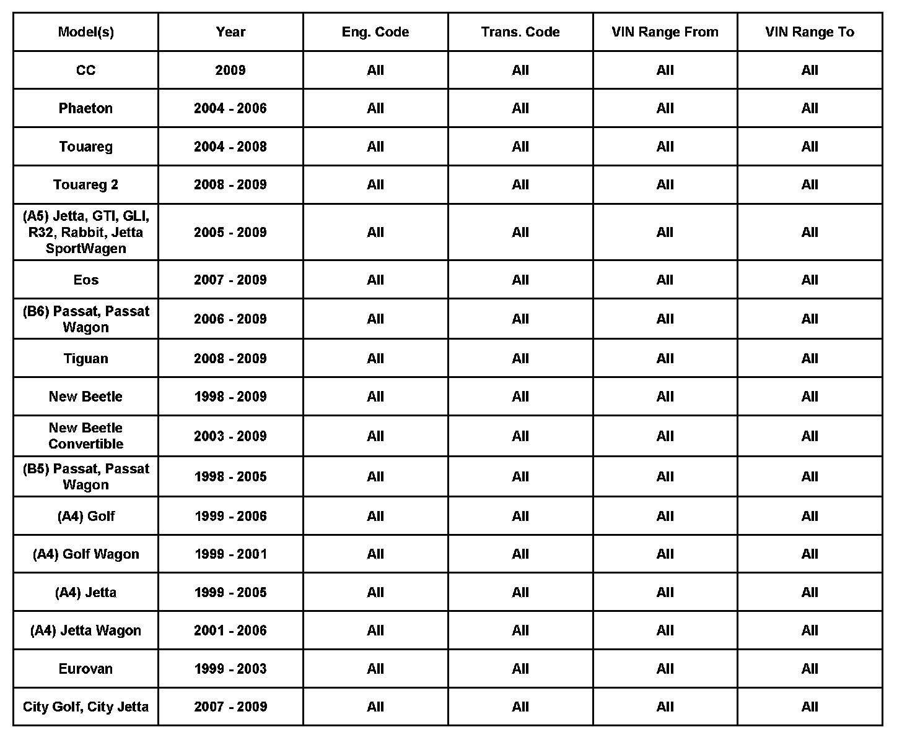

Keyless Entry/Starting - Remote Key Inoperative
57 08 10Oct. 28, 2008
2011385 Supersedes T.B. Group 57 number 08-08 dated May 20, 2008 due to addition of 2009 CC.

Vehicle Information
Condition
Remote Control Key Diagnostics
^ Remote control key is inoperative, or has inconsistent operation.
^ Only Lock button on remote control key functional
^ DTC 00956 005, No or Incorrect Basic Settings/Adaptation may be present.
Technical Background
Proper diagnosis of remote control key functionality is critical before replacement of remote.
Production Solution
No production change required.
Service
^ Verify remote has not lost synchronization.
Tip:
DTC 00956, No or Incorrect Basic Settings/Adaptation is a direct result of lost synchronization. Additionally, loss of only 1 remote's functionality can be a result of DTC 00956.
NOTE:
Synchronization is not a warrantable concern.
Synchronization Procedure
Model(s) Procedure
(A5) Jetta, GTI/Rabbit/R32, Eos, - Switch ON ignition with spare key.
Tiguan, Jetta Sport Wagen - Unlock driver door manually by inserting main key in driver door lock cylinder.
- Press unlock button once on remote.
- Remove spare key from ignition lock cylinder.
- Close driver door and verify remote functionality.
(B6) Passat Sedan, Wagon, & CC Tip: Care must be taken when removing cover from door handle to expose lock cylinder.
- Unlock driver door manually with emergency key (spare).
- Switch ON ignition with main key.
Touareg & Phaeton - Unlock driver side door manually using door lock cylinder.
- Switch ON ignition.
(B5) Passat, Passat Wagon - Press lock or unlock button (ONE TIME) for one second.
(A4)Golf/Jetta (including Wagon) - Vehicle remains locked.
Euro Van - Control unit recognizes only one key code via the master key.
City Golf/Jetta - Lock or unlock vehicle with MASTER KEY.
New Beetle/New Beetle Convertible - Procedure is complete.
If remote is still inoperative, perform the following:
^ Remove battery from remote; see Repair Manual Group 57 - Front doors, Central locking system, Central locking system, in ElsaWeb.
^ Perform a capacitive discharge by pressing down for 5 seconds any button on remote with battery removed.
^ Install new battery and reassemble remote in reverse order.
Tip:
Observe polarity of battery when installing. The positive terminal is marked in the remote housing and on battery.
Verify operation of remote.
If remote remains Inoperative, perform ALL of the following:
^ Remove new battery and verify surface voltage is at least 3.0 V
^ Perform an additional capacitive discharge by pressing down any button on remote for 5 seconds while battery is removed. This will erase the battery memory of the remote.
^ Reinstall new battery. Reassemble remote in reverse order. Verify red LED is illuminating when a button is pressed.
^ Reprogram remote using VAS 5051/5052.
^ If remote remains inoperative and all diagnostic avenues have been exhausted, replace remote.
Key Points to Remember
^ DO NOT attempt to reuse original battery regardless of voltage reading. A new battery must be installed.
^ DO NOT attempt to separate key portion from remote on a Touareg or Phaeton. There is a removable cover to access battery.
^ Pressing down on any button of the remote for 5 seconds, before installing the replacement battery (capacitive discharge), will erase the battery memory of the remote. If this is not done, remote will be inoperative.
^ There is no need to program remote if battery is removed for testing or replacement. However, if another problem exists, proper diagnosis needs to take place before remote is replaced.
Warranty
Warranty Test Center Notes:
^ 100% of remote replacements will be requested by Warranty Test Center for testing.
^ Synchronization is not considered a warrantable condition.
^ Claims that involve remote programming may be debited without proper documentation in the warranty claim.
^ Replacement battery must be included with replaced remote.
^ Any remote a technician has replaced without first performing this technical bulletin will be automatically subject to a debit.
^ Any remote that has failed due to water contamination is not considered warrantable.
^ All remotes that test NTF by Warranty Test Center may be debited.
Required Parts and Tools
No Special Parts required.
No Special Tools required.
Additional Information
All part and service references provided in this Technical Bulletin are subject to change and/or removal. Always check with your Parts Dept. and Repair Manuals for the latest information.